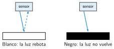
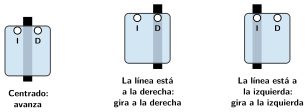

Un robot que sigue una línea
🤔 Pienso5 min
Qué hago aquí: Piensa un momento y contesta con lo que ya sabes. No pasa nada si no lo sabes: es para empezar.
Una camiseta negra se calienta más al sol que una blanca. ¿Qué hace cada color con la luz?
📖 Leo y aprendo15 min
Qué hago aquí: Lee despacio, mira los dibujos y los ejemplos, y quédate con la idea clave del final.
El sensor siguelíneas mira al suelo. Tiene dos «ojos» : uno a la izquierda (I) y otro a la derecha (D). Cada ojo lanza luz y mira si vuelve.

El robot empieza con la línea negra entre los dos ojos.

Ajustar el robot. Casi nunca sale bien a la primera. Prueba a cambiar:
- La velocidad: si va muy rápido, se sale en las curvas.
- El giro: si gira mucho, va haciendo eses.
✏️ Hago25 min
Qué hago aquí: Haz las actividades en orden. Empieza siempre por las básicas.
Completa: si el ojo izquierdo ve negro, el robot gira a la .
Pon el robot en el circuito. Muestra en pantalla lo que ve cada ojo. Muévelo con la mano y comprueba los casos de la tabla.
Programa el siguelíneas. Puedes copiar el paso a paso del final de la unidad. ¿Sigue la línea? Sí A veces No
Prueba tres velocidades.
| Velocidad | ¿Se sale en las curvas? | Tiempo de una vuelta |
|---|---|---|
| 30 | ||
| 50 | ||
| 80 |
Tu robot hace eses en las rectas. ¿Qué cambiarías?
✏️ Puedes responder escribiendo, con un dibujo o un esquema, o contándolo en voz alta.
🚀 Amplío (si quieres saber más)
Qué hago aquí: ¿Has terminado? Lee la curiosidad o elige el reto. Es voluntario.
Cambia el programa: cuando los dos ojos vean negro, el robot se para 3 segundos y luego sigue.
✅ Compruebo5 min
Qué hago aquí: Contesta sin mirar la ficha y marca cómo lo llevas.